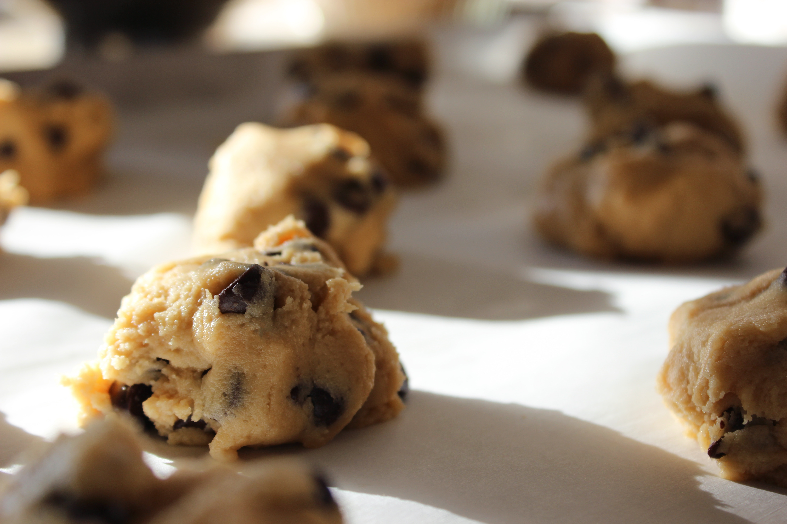

Jimmy's Yums
Flourless Peanut Butter Brownie Cookies
These thick and fudgy flourless peanut butter brownie cookies are made with only 7 ingredients. Ultra chewy, melt-in-your-mouth, and gluten free. They taste so indulgent.
Ingredients:
1 large egg
1 cup (250g) honey roasted peanut butter, at room temperature (not warm)
1/3 cup (67g) light or dark brown sugar, lightly packed
1 teaspoon baking soda
1/4 cup (21g) unsweetened cocoa powder (Dutch-process can be used)
1/2 teaspoon vanilla extract
3/4 cup peanut butter chips
Directions:
Preheat oven to 350°F (177°C) and line two large baking sheets with parchment paper or silicone baking mats.
In a medium bowl, whisk the egg until beaten.
Mix in the peanut butter, then the brown sugar, baking soda, and cocoa powder.
Mix everything together very well, then mix in the vanilla extract.
Finally, fold in the peanut butter chips until combined.
Scoop the dough, about 1.5 Tablespoons each, onto prepared baking sheet.
Bake two batches - 6-7 cookies on each baking sheet each.
Gently press down on the dough mounds with the back of a spoon. If you find the cookie dough balls are a little oily from your peanut butter-- mine usually are-- blot each with a paper towel.

Bake for 9-10 minutes. The cookies will look very soft-- that's ok! For crispier cookies, bake up to 11-12 minutes.
Allow the cookies to cool for 10 minutes on the baking sheet before transferring to a wire rack to cool completely.
Sometimes I press a couple more peanut butter chips into the tops of each cookie immediately after coming out of the oven. This is optional and only for looks!
Make ahead tip: Cookies stay fresh covered at room temperature for up to 1 week. Baked cookies freeze well - up to three months. Unbaked cookie dough balls freeze well - up to three months. Bake frozen cookie dough balls for an extra minute, no need to thaw.
Recipe Notes:
You can use homemade, natural, or commercial peanut butter butter, however the type you use will alter their texture slightly. I found the best texture was with 1 cup of my homemade honey roasted peanut butter or 1/2 cup Skippy Natural PB and 1/2 cup all-natural, organic peanut butter. Be sure to stir in any excess oil on top of the natural brands, and get it completely mixed in. Otherwise, your cookies will spread. You may want to add another Tablespoon of brown sugar if your peanut butter isn't sweet like the honey roasted kind I use.
I have not had luck using a liquid sweetener such as honey, maple syrup, or agave. Update: I have, however, successfully used coconut sugar instead of brown sugar. Very tasty!
Instead of peanut butter chips, try dark chocolate chunks, colorful sunflower seeds (like here ), sliced almonds, honey roasted peanuts, or chocolate chips.
Jimmy's Yums 2016
facebook
twitter
instagram
pinterest